Kingdom Rush 5: Progression Redesign · Design Document
| Item | Details |
|---|---|
| Game name | Kingdom Rush 5: Alliance |
| Game type | Tower defense |
| Release date | July 15, 2024 |
| Developer | Ironhide Game Studio |
Kingdom Rush 5 is a classic tower defense game where players place towers at specific sites along the paths to destroy waves of enemies appearing at predetermined intervals. The goal is to defeat all enemy waves before they reach the end of the road (the core). The player wins if fewer than a certain number of enemies reach the core after all waves are defeated.
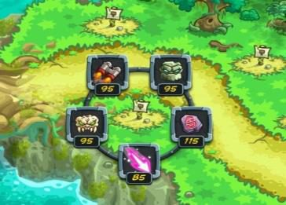
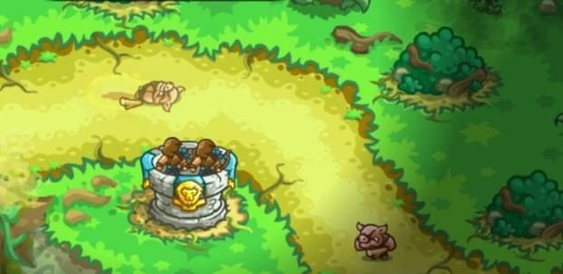
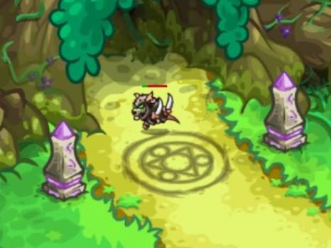
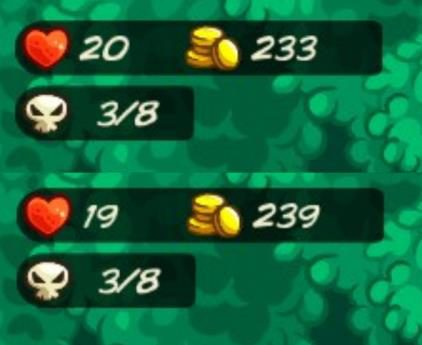
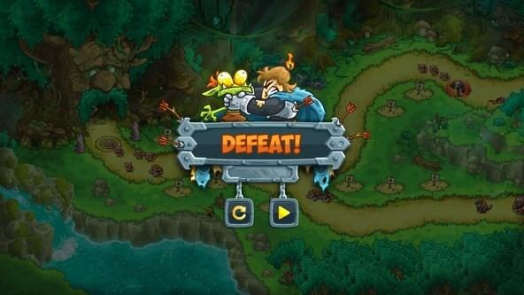
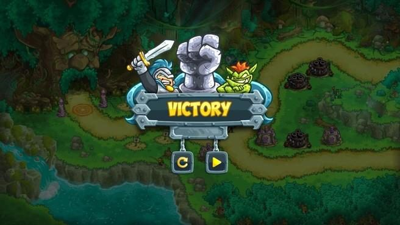
Players are scored based on the core's remaining health after completing a level.
Kingdom Rush 5 has units that engage enemies along the path, generated by towers or skills.
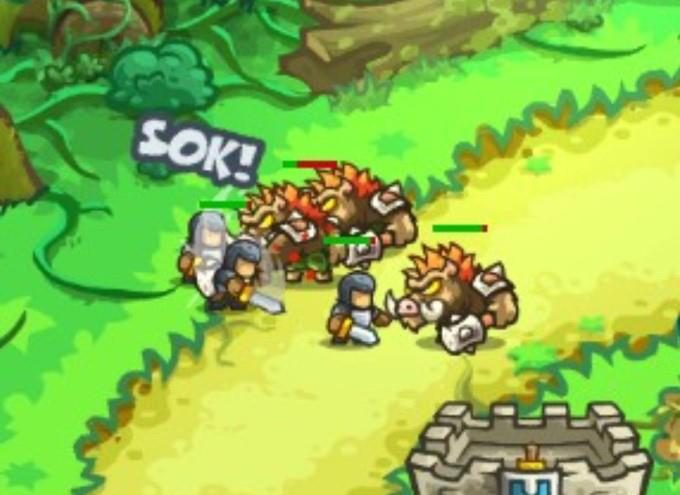
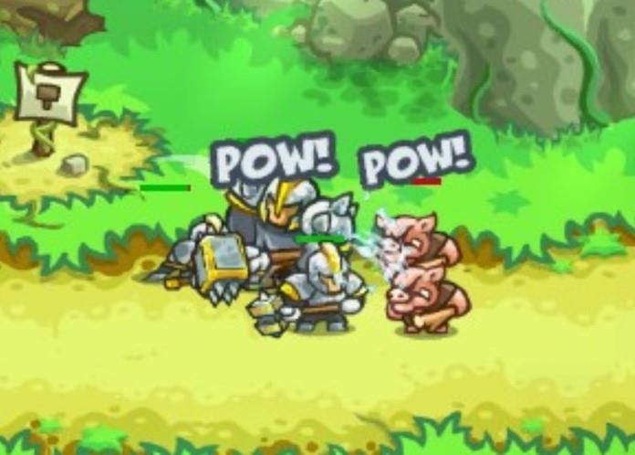
Heroes are unique, controllable units with stronger combat abilities.
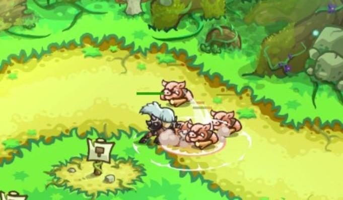
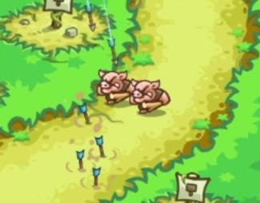
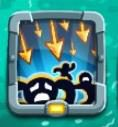
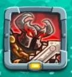
As levels progress, new towers and heroes are unlocked. Heroes gain experience by defeating enemies. After reaching full experience for the current level, a hero levels up and becomes more powerful. Heroes can level up to a maximum of level 10.
In the Hero Interface, players can view detailed information about each hero by selecting their avatar.
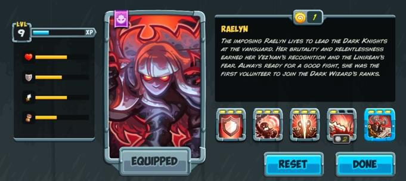
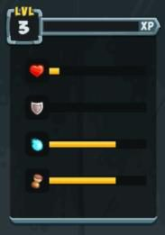
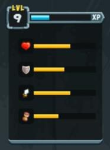
When heroes level up, they gain skill points, which can be used to upgrade skills. Skill upgrades are reversible: players can reset and redistribute skill points.
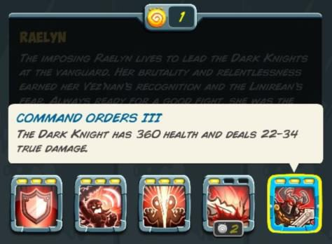
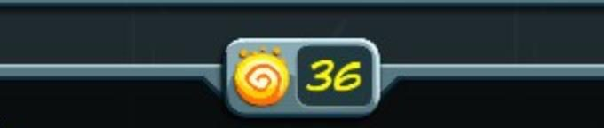
From the main menu, players can select Main Levels and open the information interfaces for Heroes, Towers and Upgrades. Completing a level unlocks the next level.
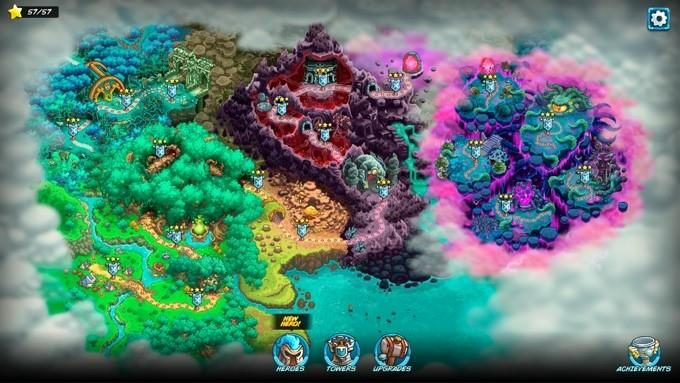
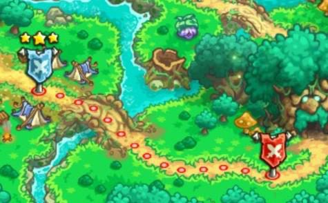
In the Hero Interface, there are 2 hero equipment slots; the equipped heroes are used in battle.
To change equipped heroes, players click the desired hero's avatar, press the equip button, and select the slot to replace the existing hero.
In the Tower Interface, there are equipment slots for the towers used in battle (maximum 5 towers).
The process for changing towers is the same as for heroes.
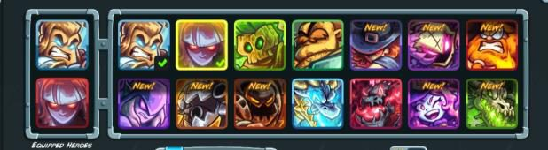
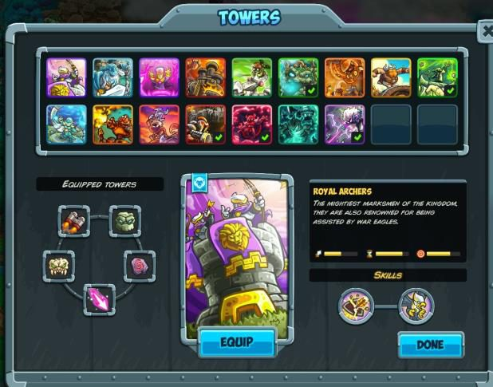
At the beginning or end of a level, the game tells the story in comic style.
Main plot: following Kingdom Rush: Vengeance, Linirea falls under Vez'nan's rule. Meanwhile, a rebellion is brewing in the southern forests. The kingdom faces a threat from interdimensional beings called the "Warlords". Vez'nan's dark army forms an uneasy alliance with Linirea's rebels to counter this threat. The heroes of Linirea, including elves, orcs and dark knights, unite their strength to protect their world.
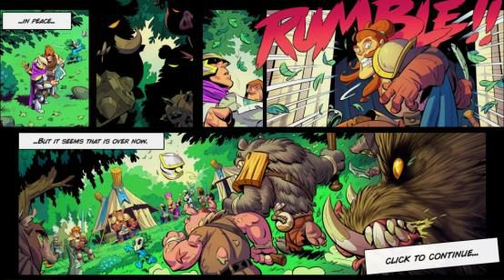
Each hero will have their own unique Branch Levels catering to different player persona types:
| "Commander" | "Hero" |
|---|---|
| Enjoys strategic planning and precise execution. | Interested in character upgrades and growth. |
| Typical players of Kingdom Rush and similar strategy games. | Values character stories and lore. |
| Feedback often mentions the need for more levels to deepen the experience. | May have limited strategic abilities. |
Objectives:
Open the Character Interface to access Branch Levels.
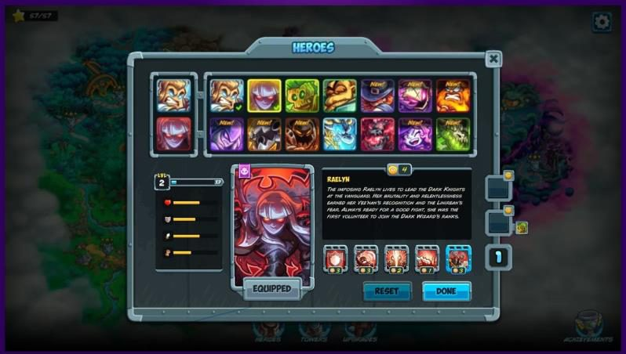
Each character has 1–3 Branch Levels, displayed on the side of the interface.
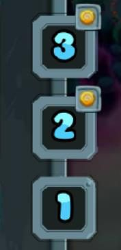
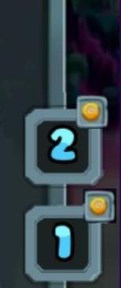
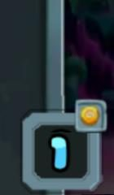
If a level rewards skill points, a skill point icon is displayed in the top-right corner of the level icon. If two heroes share one Branch Level, the level icon shows the avatar of the other hero.
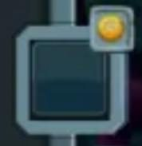
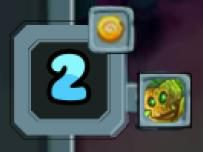
When players click a Branch Level, they enter the basic information interface for that Branch Level.
Unlocked and locked levels are displayed in different forms.
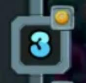
When the mouse pointer hovers over a level, it displays the unlocking conditions.
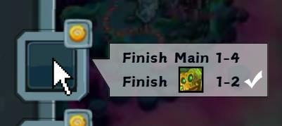
After completing Main Level 2, the hero icon in the main menu is highlighted, prompting the player to open the character interface.
The player is told that they can unlock the first Branch Level of Vesper (the first unlocked hero) and is required to open the information interface for this level. Afterward, the player is free to proceed.
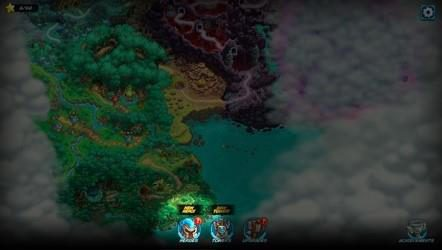
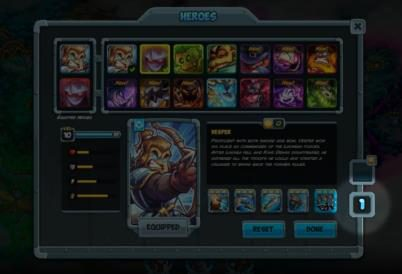
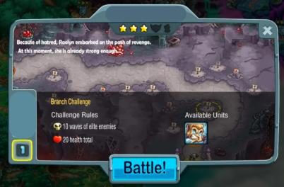
Each Branch Level has a tutorial theme; details are in the attached Excel file Branch Levels, Sheet 2 "Level Content" (Appendix Table 2). Using Raelyn's first Branch Level as an example, we show how Branch Levels are designed and played.
After selecting a Branch Level, players enter the information interface, which displays a story summary and the tutorial theme.
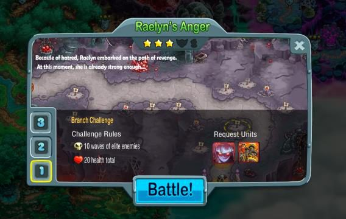
Clicking the "Battle!" button opens the hero equipment check interface (unlike the main levels, which lead directly into the game). Clicking the "Next" arrow button opens the tower equipment interface.
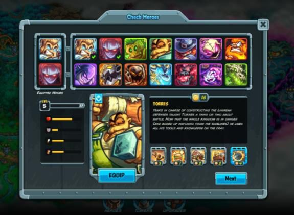
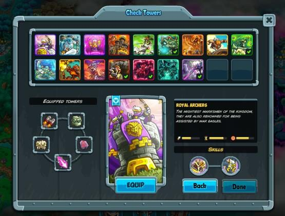
Each Branch Level has specific equipment requirements, requiring players to bring certain heroes or towers. If the player's equipment doesn't meet the level's requirements, the required hero or tower is automatically equipped in the player's first equipment slot. Players can freely change their equipment, but they can only start the battle when their equipment meets the Branch Level's requirements. The "Battle!" button lights up when the requirements are met, allowing players to click it.
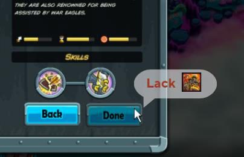
If the Branch Level's story needs to set up the plot or develop a character, a comic is shown at the beginning of the level.
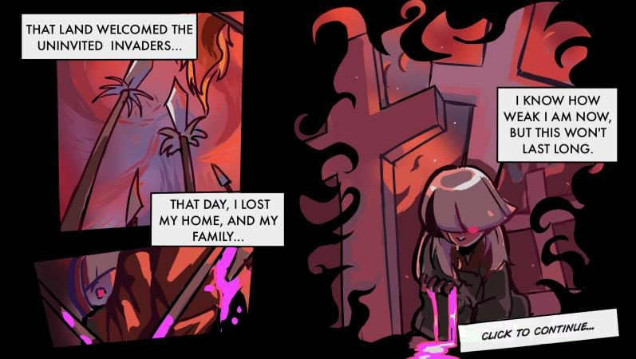
In a Branch Level, some towers may already be built on the field and cannot be sold during the level.
In Raelyn's first Branch Level, the initial tower setup is: 1 Archer Tower (locked).
After entering the level, a dialogue box appears above the character with hints about the level. The text appears in typewriter style. Once all the text is displayed, the player can click to proceed to the next line. If the player clicks during typing, the current line completes instantly.
When the player is ready, they click the wave spawn button to release the first wave of enemies.
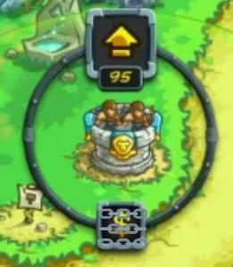
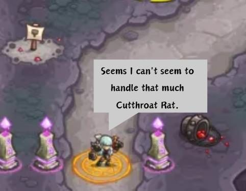
Phase objective: let players get familiar with hero skills without too much pressure.
Phase objective: guide players to understand the hero's strengths and weaknesses.
Phase objective: provide strategic guidance, including specific strategy combinations or getting familiar with tower usage.
Phase objective: help players combine all the skills learned so far by mixing previously encountered enemies.
Victory or defeat is determined by remaining health. The number of rating stars is also based on remaining health.
If the level includes planned story developments or conclusions, a comic is displayed at the end of the level.
When a hero's Branch Level is completed, players receive a level unlock reward.
In the original game, heroes could level up to 10 with no restriction. In the modified system, Level 9 and Level 10 are locked, meaning heroes can only reach Level 8 before they get the level unlock reward. Even if a hero is at Level 8 with full experience, they cannot level up to Level 9. However, heroes keep accumulating experience, and once the level is unlocked, they can level up.
When Level 9 or Level 10 is locked, a hero at Level 8 or Level 9 shows an icon indicating the level-up restriction on their experience bar. Hovering over the icon displays an explanation.
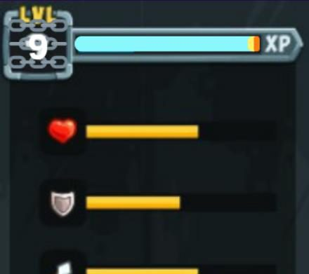
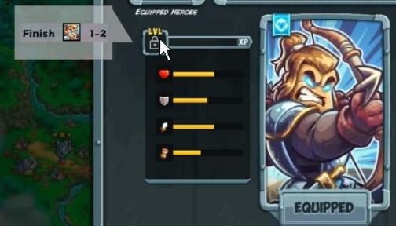
The level unlock rewards differ depending on the number of Branch Levels the hero has:
| Number of Branch Levels the hero has | Level unlock rewards |
|---|---|
| 1 | Unlock Level 9 in Branch Level 2 Unlock Level 10 in Branch Level 3 |
| 2 | Unlock Level 9 in Branch Level 1 Unlock Level 10 in Branch Level 2 |
| 3 | Unlock both Level 9 and Level 10 in Branch Level 1 |
In the original system, characters received 4 skill points per level. In the updated system, the skill points earned for leveling up from Level 8 to 9 and from Level 9 to 10 are reduced to 2 each.
The 2 skill points removed from reaching Level 9 or Level 10 are granted when those levels are unlocked (see Section 3.3.1).
Examples:
Each character's Branch Levels serve a narrative purpose. The narrative structure differs depending on the number of Branch Levels (Section 3.1) the hero has:
| Number of Branch Levels the hero has | First Branch Level | Second Branch Level | Third Branch Level |
|---|---|---|---|
| 1 | Setup | Confrontation | Resolution |
| 2 | Setup + half of the confrontation + resolution | Half of the confrontation + resolution | / |
| 3 | Setup + confrontation + resolution* | / | / |
*Tip: "setup + half of the confrontation + resolution" in Story Segment 1, and "half of the confrontation + resolution" in Story Segment 2.
Original Excel fileBranch Levels.xlsx, with the three sheets below
Download Excel| Hero | Main level that unlocks the hero | Number of Branch Levels | Branch Level 1 unlock | Branch Level 2 unlock | Branch Level 3 unlock |
|---|---|---|---|---|---|
| Vesper | Main 1 | 2 | Main 1 | Main 3 | / |
| Raelyn | Main 2 | 3 | Main 2 | Main 3 | Main 4 |
| Nyru | Main 3 | 2 | Main 3 | Main 5 | / |
| Torres | Main 5 | 2 | Main 5 | Main 6 | / |
| Anya | Main 7 | 3 | Main 7 | Main 8 | Main 9 |
| Grimson | Main 8 | 3 | Main 8 | Main 9 | Main 10 |
| Broden | Main 9 | 3 | Main 9 | Main 10 | Main 11 |
| Therien | Main 11 | 3 | Main 11 | Main 12 | Main 13 |
| Onagro | Main 13 | 3 | Main 13 | Main 14 | / |
| Warhead | Main 14 | 2 | Main 14 | Main 15 | / |
| Lumenir | Main 16 | 1 | Main 16 | / | / |
| Kosmyr | Main 16 | 1 | Main 16 | / | / |
| Branch Level no. | Unlocks after | Corresponding level | Branch Level theme | Required characters | Required towers |
|---|---|---|---|---|---|
| 01 | Main 1 | Vesper 1 (Vesper's Branch Level 1) | Basic Tower Synergies and Upgrades | Vesper | |
| 02 | Main 2 | Raelyn 1 | Tricannon | Raelyn | Archer Tower (Locked) |
| 03 | Main 3 | Vesper 2 | Melee, Ranged and Anti-Air | Vesper | |
| 04 | Main 3 | Raelyn 2, Nyru 1 (Raelyn's Branch Level 2 and Nyru's Branch Level 1 are the same level) | Resistances | Raelyn & Nyru | |
| 05 | Main 4 | Raelyn 3 | Single-Target vs. Area-of-Effect (AoE) & Ballista Outpost | Raelyn | |
| 06 | Main 5 | Nyru 2 | Lane Switching | Nyru | |
| 07 | Main 5 | Torres 1 | Arborean Emissary & Synergies Between Towers and Heroes/Towers | Torres | |
| 08 | Main 6 | Torres 2 | Battle Brewmasters & Demon Pit | Torres | |
| 09 | Main 7 | Anya 1 | Skill Point Allocation | Anya | |
| 10 | Main 8 | Anya 2 | Necromancer Tower & Elven Stargazer | Anya | |
| 11 | Main 8 | Grimson 1 | New Enemies | Grimson | |
| 12 | Main 9 | Anya 3 | Skill Point Allocation 2 & True Damage | Anya | |
| 13 | Main 9 | Broden 1, Grimson 2 | Dwarven Flamespitter | Broden & Grimson | |
| 14 | Main 10 | Broden 2, Grimson 3 | Special Heroes & Dune Sentinels | Broden & Grimson | |
| 15 | Main 11 | Broden 3, Therien 1 | Rocket Gunners | Broden & Grimson | |
| 16 | Main 12 | Therien 2 | Special Enemies & Rocket Gunners 2 | Therien | |
| 17 | Main 13 | Therien 3, Onagro 1 | Eldritch Channeler | Therien & Onagro | |
| 18 | Main 14 | Onagro 2, Warhead 1 | Special Enemy Units 2 | Onagro & Warhead | |
| 19 | Main 15 | Warhead 2 | Grim Wraiths & Synergies Between Towers and Heroes/Towers 2 | Warhead | |
| 20 | Main 16 | Lumenir 1, Kosmyr 1 | Final Challenge | Lumenir & Kosmyr |
| Wave | Duration | Spawn timing | Enemy | Quantity |
|---|---|---|---|---|
| 1 | 5s | Hog Invader | 3 | |
| 25s | 10s | Tusked Brawler | 2 | |
| 2 | 0s | Tusked Brawler | 2 | |
| 25s | 5s | Hog Invader | 4 | |
| 3 | 0s | Bear Vanguard | 1 | |
| 25s | 5s | Hog Invader | 4 | |
| 4 | 0s | Tusked Brawler | 2 | |
| 25s | 5s | Cutthroat Rat | 3 | |
| 5 | 5s | Hog Invader | 4 | |
| 25s | 10s | Hog Invader | 4 | |
| 6 | 0s | Bear Vanguard | 1 | |
| 5s | Tusked Brawler | 4 | ||
| 10s | Cutthroat Rat | 3 | ||
| 25s | 15s | Hog Invader | 4 | |
| 7 | 5s | Cutthroat Rat | 3 | |
| 10s | Hog Invader | 4 | ||
| 13s | Bear Vanguard | 3 | ||
| 19s | Tusked Brawler | 2 | ||
| N/A | 25s | Hog Invader | 4 |